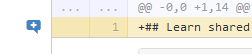
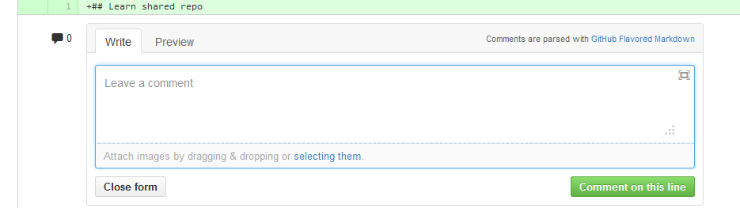
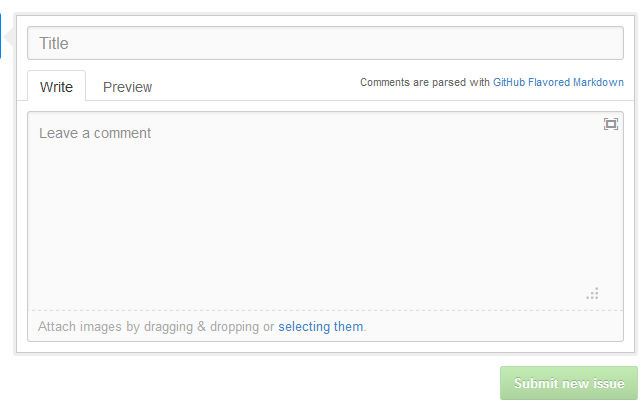
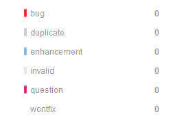

Github 用于存放使用Git版本控制的软件代码和内容项目。于2008年2月运行, 根据维基百科, 2013年4月，GitHub用户数达到350万，代码库数量达到6百万个。
介绍如何在 Github 上创建一个新项目, 包括创建项目主页
图 2.1 创建版本库
如果是从头创建版本库，可以采用先克隆，建立提交数据，最后再通过推送完成GitHub版本库的初始化。步骤如下:
git@github.com:ndishare/Intro-to-github.gitgit add
git commit -m "xxx"git push origin masterndishare.github.io 的Git版本库创建一个名为 gh-pages 的分支, 添加静态网页.
git symbolic-ref HEAD refs/heads/gh-pagesrm .git/index图 3.1 Fork
 图 3.2
 图 3.3
 图 3.2
 图 3.3